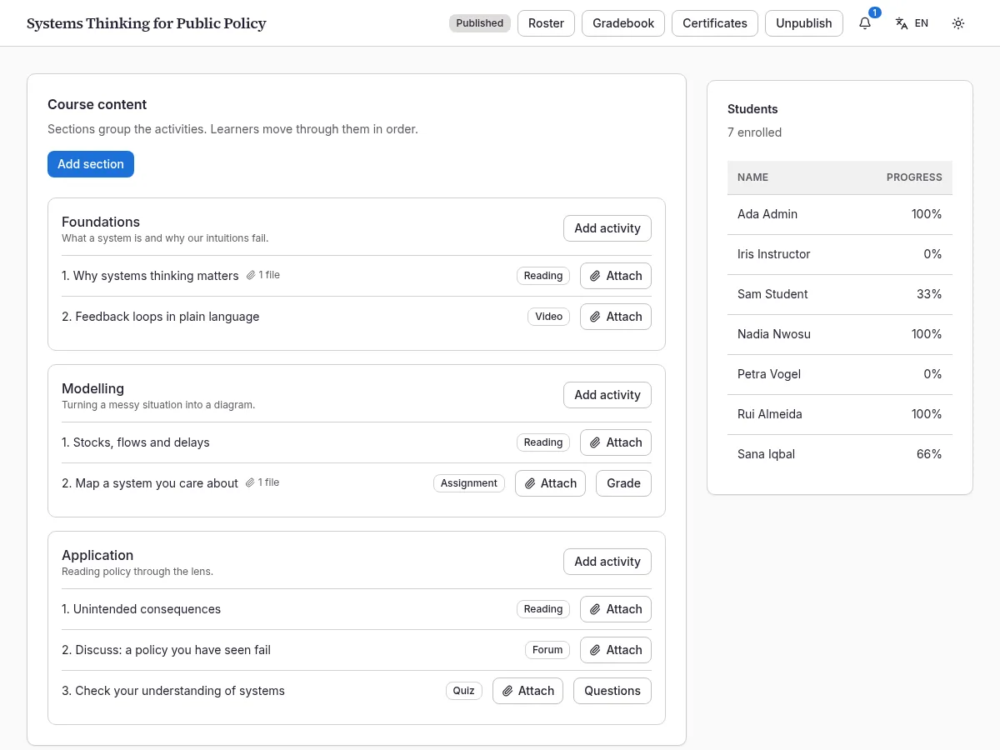
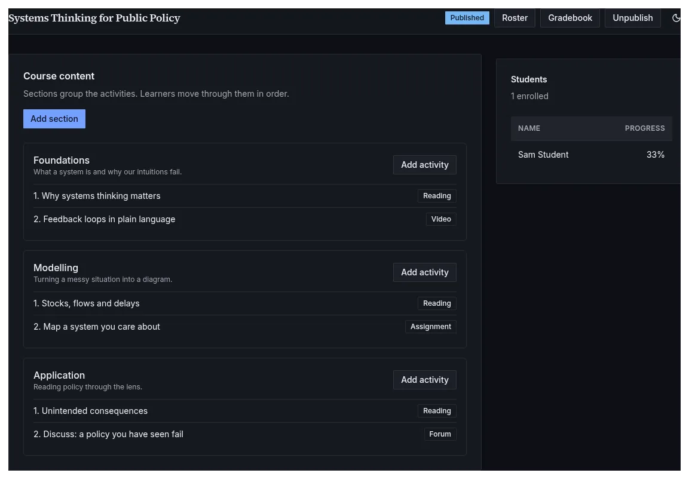
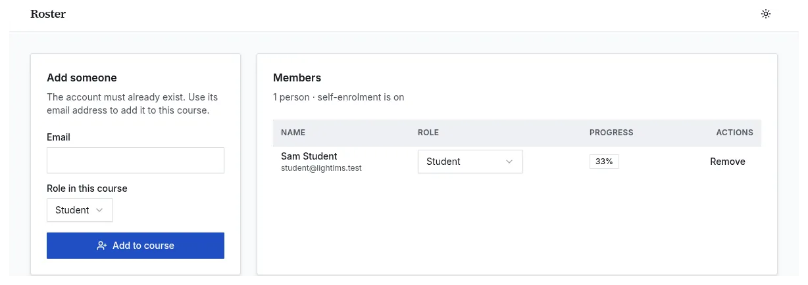
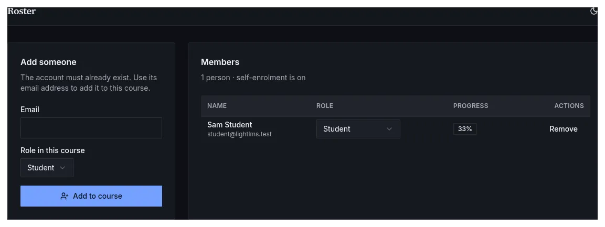
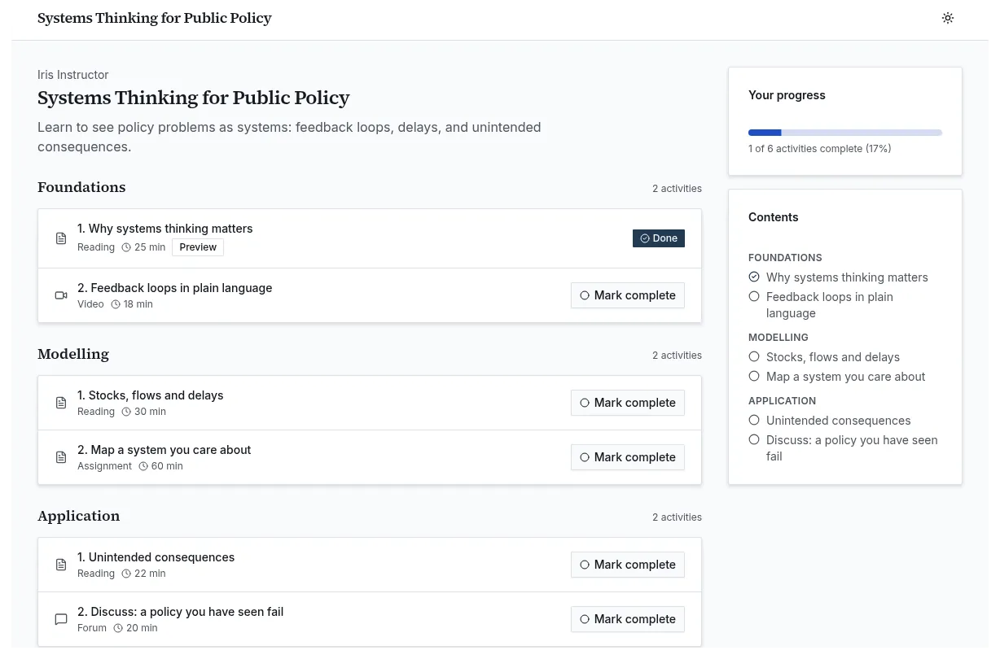
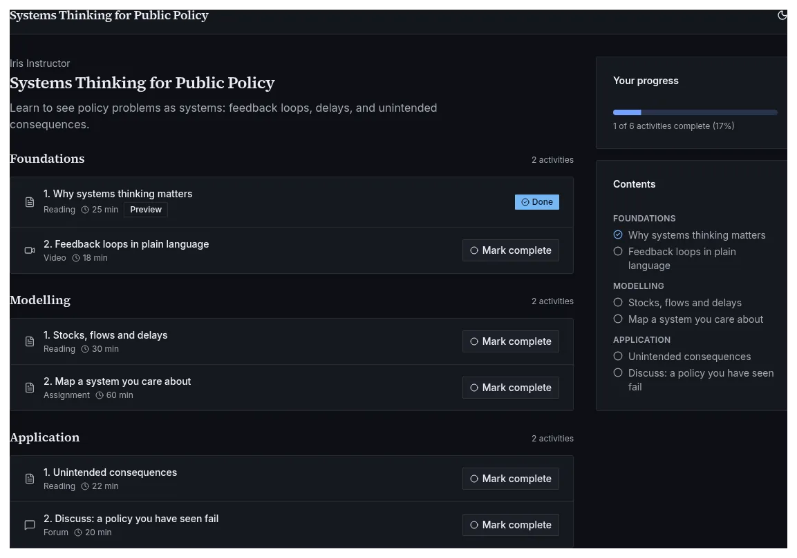

Using it
Courses and lessons
A course holds sections. A section holds activities. A learner moves through them in order, and their progress is the share of activities they have completed.
Building a course


- An instructor creates a course under Teaching. It starts as a draft and is not in the catalogue.
- Sections are added to group the activities. A section may be hidden, which keeps it out of the learner view without deleting it.
- Activities are added to a section: a reading, a video, a quiz, an assignment.
- The first activity of the first section may be marked as a preview, so a visitor sees the course before enrolling.
- Publishing puts the course in the catalogue and makes it visible to learners.
Activity types
| Type | What it does |
|---|---|
| Reading | Long text. A learner marks it complete when they are done. |
| Video | A video, with material files that can be downloaded. The video itself is not hosted by LightLMS. |
| Quiz | Questions with a time limit, an attempt limit, and a pass mark. |
| Assignment | Written work, with an optional attachment, marked by a person. |
| Forum | A discussion. The forum itself is not implemented yet. |
Enrolment


A course may let people enrol themselves, or only accept people added by a teacher. The catalogue page and the course page follow the setting.
A teacher can also set a course role for somebody: student,
assistant, or instructor. An assistant sees the
roster and the course, but not the gradebook.
Progress
Progress is the share of activities a learner has completed. Activities that cannot be completed, such as a preview, do not count towards it, so the number never flatters a learner.


When progress reaches 100%, the learner becomes completed and
the course is checked for a certificate.
Files
A teacher can attach files to an activity. Uploaded files are stored outside the public folder and served by a controller that checks the permission first. The file name on disk is generated by the server; the name you upload is kept only as a label.